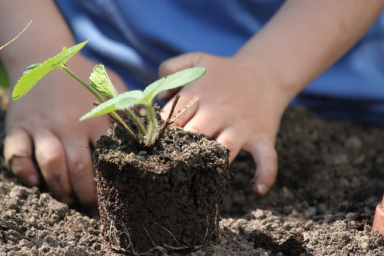

Transformando a Inclusão Ambiental em Ação Direta.

A Missão em Prática
Na "Meio Ambiente para Todos", acreditamos que a mudança real acontece no terreno, nas comunidades e no
dia a dia. Nossos projetos são a forma como transformamos nossa missão de justiça e inclusão
socioambiental em uma realidade tangível, levando o verde para quem mais precisa e garantindo que todas
as vozes sejam ouvidas.
Conheça nossas principais frentes de atuação e descubra como você pode fazer parte dessa transformação.
Projetos em Destaque
Aqui estão as iniciativas que estamos desenvolvendo atualmente com o apoio de nossa incrível rede de
voluntários e doadores:
1. Projeto Hortas da Cidadania
O que é? Implementamos hortas urbanas comunitárias em áreas periféricas e espaços
públicos ociosos. Mais do que apenas plantar alimentos, criamos espaços de convivência, educação
ambiental e fortalecemos a segurança alimentar das famílias locais.
Nosso Foco: Ensinar técnicas de cultivo orgânico, promover o trabalho coletivo e
gerar autonomia para a comunidade.
2. Projeto Trilhas Acessíveis
O que é? Acreditamos que a natureza não deve ter barreiras. Este projeto mapeia,
adapta e cria trilhas em parques e áreas de preservação para que pessoas com deficiência (PCDs),
idosos e pessoas com mobilidade reduzida possam ter uma experiência segura e imersiva na natureza.
Nosso Foco: Parceria com gestores de parques, instalação de sinalização tátil, pisos
adequados e promoção de visitas guiadas inclusivas.
3. Projeto Vozes do Clima
O que é? Levamos a educação ambiental para onde ela é mais necessária. Realizamos
oficinas em escolas públicas, associações de bairro e centros comunitários, capacitando líderes
locais para que possam defender seus próprios direitos ambientais.
Nosso Foco: Combater o racismo ambiental dando ferramentas e voz às comunidades mais
afetadas pela poluição, falta de saneamento e eventos climáticos extremos.
Seja a Mudança: Junte-se ao Voluntariado
Seu tempo e seu talento são as sementes mais valiosas que podemos plantar. Nossos voluntários são o
coração da "Meio Ambiente para Todos", e existem inúmeras formas de ajudar, seja você de qual área for.
Como você pode contribuir?
Ação em Campo: Coloque a mão na terra! Ajude-nos nos mutirões de plantio, na
construção das hortas ou na adaptação das trilhas.
Apoio Educacional: Tem conhecimento em biologia, agronomia, geografia ou pedagogia?
Ajude a ministrar nossas oficinas e a criar materiais educativos.
Habilidades Remotas: Precisamos de ajuda com design gráfico, gestão de redes
sociais, tradução de materiais, captação de recursos e apoio administrativo. Você pode ajudar de
qualquer lugar do Brasil!
Para que nossos projetos continuem crescendo, florescendo e alcançando mais pessoas, seu apoio financeiro
é fundamental. Cada real doado é investido diretamente na compra de ferramentas, mudas, materiais de
construção para acessibilidade, impressão de cartilhas educativas e transporte para nossas equipes.
Acreditamos na transparência total. Sua contribuição faz a diferença real.
Como Doar?
1. Doação Pontual (PIX)
Use nossa chave-mestra para doar qualquer valor, a qualquer momento.
Chave PIX (CNPJ):
00.123.456/0001-78
2. Doação Recorrente (Plataforma de Apoio)
Torne-se um apoiador mensal e nos ajude a ter previsibilidade para manter os projetos funcionando o
ano todo.